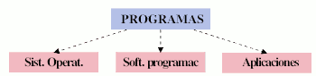

Un programa informático es una secuencia de instrucciones escritas que le indican a cualquier ordenador las tareas específicas que debe cumplir para la realización de una tarea. Los programas deben estar escritos en un lenguaje de programación.
Hay tres tipos básicos de sofware:
- de sistema, que proporciona funciones básicas, como sistemas operativos, gestión de discos, servicios, gestión de hardware y otras necesidades operativas.
- de programación, que proporciona herramientas a los programadores, como editores de texto, compiladores, enlazadores, depuradores y otras herramientas para crear código.
- de aplicación (aplicaciones o apps), que ayuda a los usuarios a realizar tareas. Por ejemplo, conjuntos de productividad ofimática, software de gestión de datos, reproductores multimedia y programas de seguridad. Las aplicaciones también se refieren a aplicaciones web y móviles como las que se utilizan para comprar en Amazon.com, socializar con Facebook o publicar fotos en Instagram.
Al hablar de un ordenador, la relación hardware-software es inseparable. El software se ejecuta sobre los dispositivos físicos y éstos precisan del software para proporcionar sus funciones.